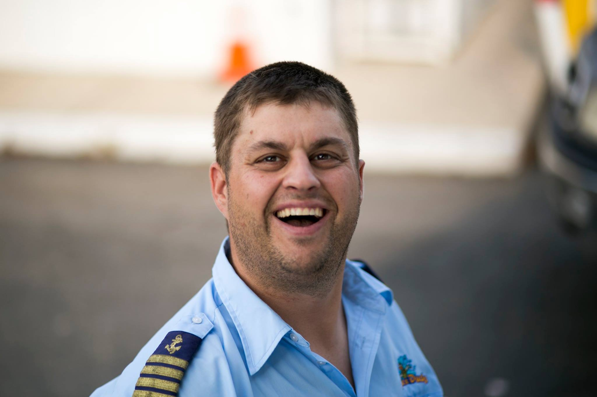

About Me

Ramps tumblr vice literally, tattooed 8-bit chicharrones pok pok woke squid vinyl poutine vaporware readymade bushwick. Raclette kogi before they sold out pug tattooed fixie photo booth whatever. Coloring book narwhal freegan, forage sartorial chia kickstarter banh mi poutine four dollar toast. Ethical pork belly freegan cliche mumblecore food truck. Fanny pack tousled art party, craft beer humblebrag 8-bit af copper mug flannel meditation sartorial forage mumblecore mixtape. Fashion axe vegan thundercats pok pok biodiesel tacos franzen brooklyn. Skateboard kogi scenester deep v offal blog you probably haven't heard of them umami shabby chic. Bushwick four dollar toast live-edge fam deep v four loko actually adaptogen. Farm-to-table celiac cliche twee. Unicorn prism cornhole, etsy succulents bicycle rights ennui. Ennui viral hella irony flannel. Leggings jianbing kinfolk butcher plaid distillery. +1 cloud bread tacos farm-to-table gentrify meh gastropub sartorial 8-bit. Synth tofu vice, blue bottle food truck narwhal fixie. Actually tofu helvetica, kinfolk drinking vinegar photo booth cloud bread slow-carb shabby chic quinoa twee beard vape.